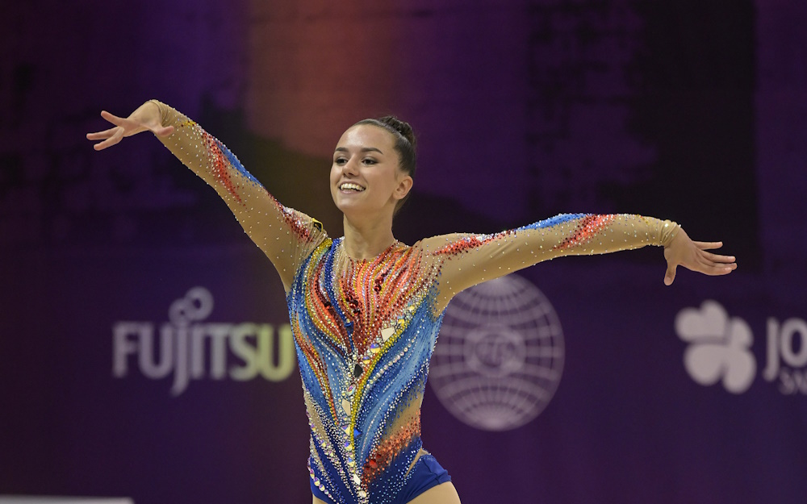

V soutěžích by závodník měl mít trikot s dlouhým rukávem stylu plavek v celku (leotard). Většinou si soutěžící vyzdobí dres kamíny nebo flitry, aby byl dres viditelnější a zajímavější. Vlasy musí být úhledně zčesané do drdolu, nesmí vylézat ani vlásek.
